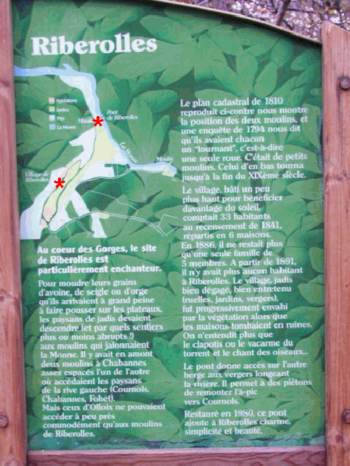

|

|
Sur le socle granitique qui
domine la Limagne, au sud de Clermont, entre Olloix et
l'abbaye de Randol il existait un village qui a presque
totalement disparu. Pour voir ce qu'il en reste cliquez sur
les liens mis sur le plan ! Ou empruntez le GR30 !
 panneau JPG zip
Si vous entrez directement : Vers l'entrée du site,
cliquez ici
panneau JPG zip
Si vous entrez directement : Vers l'entrée du site,
cliquez ici
|